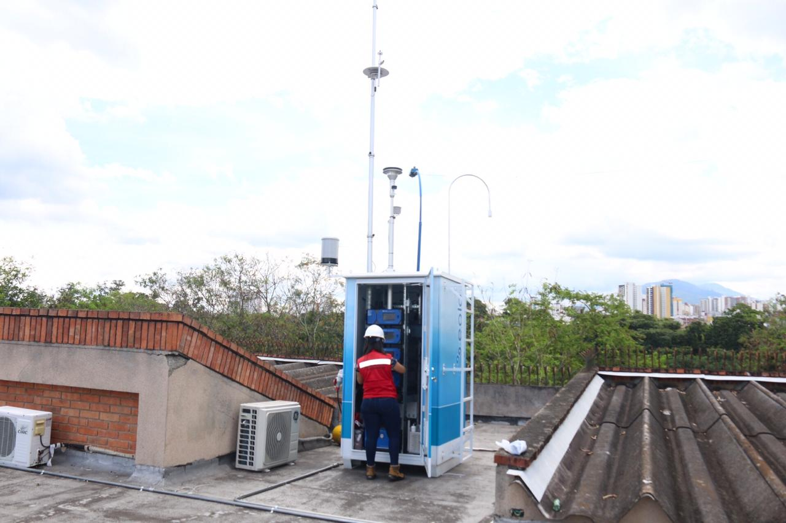

Actualmente en Floridablanca, es preocupante observar la nula gestión del recurso hídrico, viéndose principalmente que la contaminación de las quebradas, la presencia de vertimientos contaminantes que afectan la calidad del recurso hídrico en nuestro municipio.
Una situación en especial es la utilización de las rondas hídricas (orillas de las quebradas) del municipio de Floridablanca, como un botadero de basura, con ello se demuestra la poca eficiencia en la gestión ambiental y el control ambiental que han tenido las oficinas encargadas en el municipio de estas temáticas.
Es lamentablemente en el municipio dulce de Colombia, no se tiene una correcta gestión y manejo de los procesos de preservación del cuerpo hídrico municipal.

Es importante destacar que el aire en floridablanca se mantiene en un rango saludable y seguro, siendo que, el Índice de Calidad del Aire (AQI) actual se registra en 52, a las 7 de la noche hora local de este domingo, 27 de septiembre de 2026. Esta puntuación AQI en tiempo real se basa en el contaminante de mayor riesgo medido por las estaciones de monitoreo locales. Según el estándar de salud de la EPA de EE. UU., la calidad del aire en Floridablanca actualmente cae en la categoría Bueno. Con una concentración de partículas finas (PM2.5) de 9.5 µg/m³, los niveles de contaminación del aire se consideran mínimos. Esta clasificación AQI indica que el aire es fresco y saludable para el público en general, incluidos niños y personas con sensibilidad respiratoria.

La contaminación del agua en Colombia es un problema crítico, con el 70% de los cuerpos de agua superficiales y subterráneos afectados por vertimientos industriales, agrícolas y domésticos. La falta de tratamiento adecuado de aguas residuales y la deforestación contribuyen a la degradación de los ecosistemas acuáticos, afectando la biodiversidad y la salud humana.
Ciudades como Bogotá, Medellín, Cali y Bello presentan niveles de material particulado (PM2.5) superiores a los estándares de la Organización Mundial de la Salud (OMS). Aunque hubo una leve reducción en el promedio nacional a 13,8 µg/m³ en 2024, ninguna ciudad cumple con las guías internacionales, exacerbado por inversiones térmicas y alta densidad vehicular.
Bogotá genera más de 11 millones de toneladas de gases de efecto invernadero. Los residuos sólidos en la ciudad son responsables de la emisión del 18% (2.090.622) el tercero después del transporte, además de contaminar los cuerpos de agua tanto en la superficie como en los niveles subterráneos por el líquido tóxico generado por la basura.

Además, Considerando que Bogotá está construida sobre humedales, el impacto ambiental debería ser de mayor preocupación. Sin embargo, los residuos se ven por todos lados, la ciudad enfrenta una mala gestión de residuos, se acumulan 7.500 toneladas de residuos, de los cuales solo el 17% se recicla.